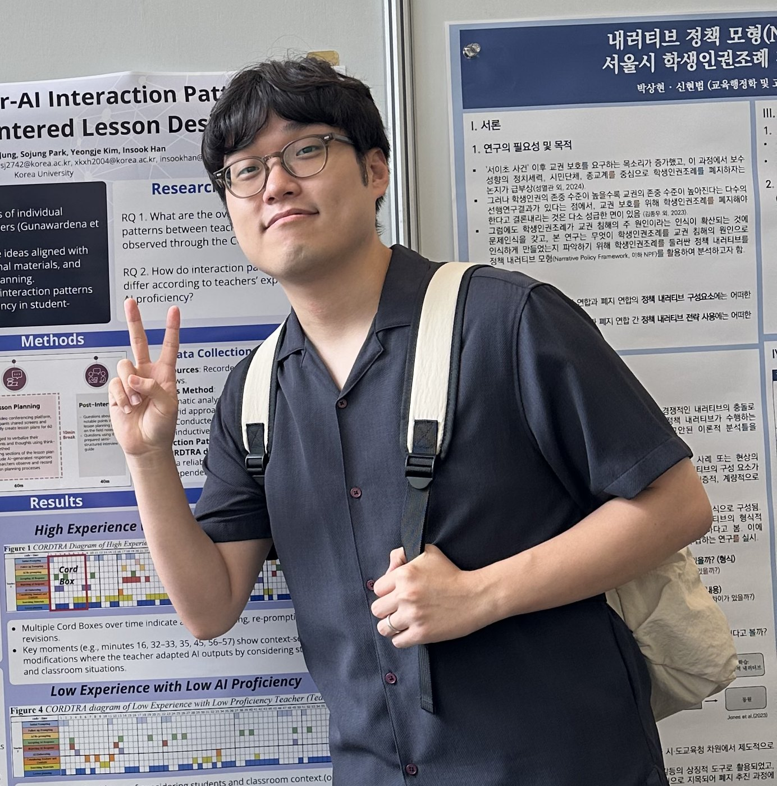

Community of Practice · AI-Supported Learning · Well-Being · Equity · Teacher Education · Education & Technology
Yeongje Kim
Ph.D. Student, Curriculum and Instruction – Learning Design and Technology, Purdue University
My research, grounded in situated learning and Communities of Practice, explores how technologies such as AI support learning across teacher education, older adult education, and multicultural education. As a doctoral student beginning this journey, I enjoy growing through collaboration and moving toward fuller participation in the educational research community.

Portrait
Profile
Research capacity with field-based edges
I am a Ph.D. student in Curriculum and Instruction (Learning Design and Technology) at Purdue University. Grounded in situated learning and Communities of Practice, my research explores how technologies such as AI support learning across teacher education, older adult education, and multicultural education. My recent work examines teacher-AI interaction in learner-centered lesson design, older adults' smartphone-based problem solving, embodied cognition in mathematics learning, culturally responsive teaching in multicultural classrooms, and students' perceptions of generative AI in higher education.
Research Moments
Places for fieldwork, conferences, and collaboration
Select a photograph to take a closer look.
Research Interests
Keywords That Shape My Research
Select a research interest to explore related publications and ongoing research.